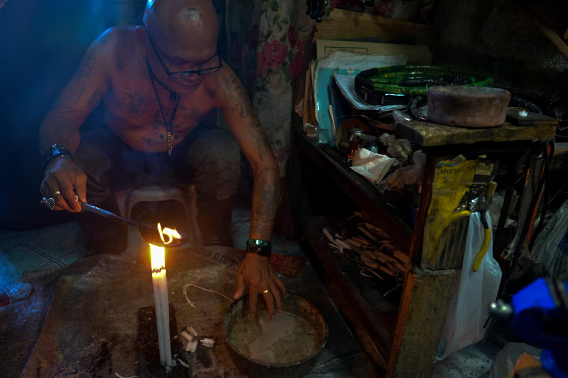

"Proliferation of quack doctors in Philippines "
Home
Introduction
History
Quack doctors here in Philippines
The Mananawas
Summary

The Mananawas
In the past and in some rural areas of the Philippines, alum (also known as hydrated aluminum potassium sulfate or tawas in the local vernacular) was ritualistically used by the albularyo or medicine man to diagnose a number of health issues, including an infant's constant crying, frequent exhaustion, or even infertility.
As prayers are recited (bulóng or oración), the patient's forehead and other suspicious or ill portions of the body are traced with the tawas. When the alum begins to crack, it is removed from the flaming embers and put in a shallow water basin. As the alum cools, its new form spreads across the water's surface and takes on a shape that could indicate the origin of the disease, which is frequently one of various local forces, such as dwarfs, demons, or other evil spirits (na-nuno, na-kulam, or na-demonyo).
The affected body portion or parts are then anointed with the water to ward off any evil spirits or illnesses. The tawas is subsequently cast aside and preferably directed westward toward the setting sun.
Source of idea: https://en.wikipedia.org/wiki/Pagtatawas